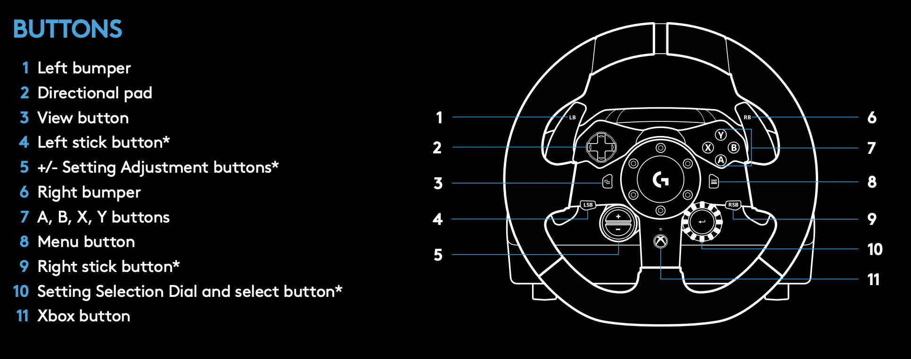

使用 DReyeVR
Now that you have DReyeVR up and running, this guide will highlight some useful features for researchers using DReyeVR: - 操纵自我车辆 - 使用 PythonAPI - 记录/重放一个场景 - 将控制从手动切换到 AI（切换） - Using our config file to modify DReyeVR params - Synchronized replay with frame capture - Other guides

Maneuvering the Ego-vehicle
These control schemes work both in VR and non-VR. With the main difference being that in VR you can move the camera pose and orientation with your head tracking, but in flat-screen-mode (non-VR) you'll need to use a mouse like in a first-person game.
- Keyboard vehicle control scheme:
- Camera Gaze - When in the 2D (flat/non-VR) view, turn the camera by clicking and dragging
- Throttle - Is done by pressing and holding W
- Steering - Is done with A to steer left and D to steer right
- Brake - Is done by pressing and holding S
- Toggle Reverse - Is done by pressing LAlt
- Turn Signals - Are both done by pressing Q (left) or E (right)
- Camera Adjust - Is done in X and Y with the arrow keys (up, down, left, right) and in Z with the pg-up/pg-down buttons
- Change Camera View Position - Is done with Tab to switch to the next camera position defined in DReyeVRParams.ini. Press Shift+Tab to switch back to the previous camera position
- Change Camera Shader - Is done with . (period) to switch to the next shader and , (comma) to the previous shader
- Logitech control scheme:
- Throttle - Is done by pushing down on the accelerator pedal
- Steering - Is done by turning the steering wheel
- Brake - Is done by pushing down on the brake pedal
- Toggle Reverse - Is done by pressing any of the ABXY (7 in the image) buttons
- Turn Signals - Are both done by the left (4) and right (6) bumpers
- Camera Adjust - Is done in X and Y with the 4 d-pad buttons (2) on the face of the wheel, and in Z with the +/- buttons (5)
-  Image source: Logitech g923 manual
Note that all the keyboard inputs are defined in DefaultInput.ini where all DReyeVR-specific controls have been suffixed with "_DReyeVR". Feel free to change any of the controls if you'd like.
However, the logitech wheel inputs are hardcoded into the source since they are checked for on every tick (instead of through the UE4 keyboard events). To see the values and modify them, see DReyeVRPawn.cpp
Using the PythonAPI
With the main Carla server running you should now be able to run all Carla provided PythonAPI scripts.
- Note that not all scripts in the original Carla 0.9.13 PythonAPI repo have been tested. We created some new scripts in place of others, such as schematic_mode.py which inherits from no_rendering_mode.py but adds support for our ego-vehicle and eye tracker.
- In some cases, we replace the old python scripts with newer ones, such as the no_rendering_mode.py in scenario-runner-v0.9.13 which is actually from release 0.9.5.
Visualize in schematic mode
cd $CARLA_ROOT/PythonAPI/examples/ # go to carla/
./schematic_mode.py
Logging DReyeVR sensor data to PythonAPI
cd $CARLA_ROOT/PythonAPI/examples/
# see all the DReyeVR sensor data
./DReyeVR_logging.py # prints directly in stdout
# or if you have a running roscore (with rospy)
./DReyeVR_logging.py --rh '192.168.X.Y' --rp 11311 # pass in roscore host & ports
rospy on an Ubuntu 20.04 LTS host. If you are interested in using a VM for this purpose, we'd recommend checking out VirtualMachine/README.md as the setup is fairly involved.
Start the DReyeVR AI controller
cd $CARLA_ROOT/PythonAPI/examples/
# DReyeVR AI controller requires this script to be running
./DReyeVR_AI.py -n 0 # won't control vehicle unless control is handoff to AI (press 3)
Start recording/replaying
cd $CARLA_ROOT/PythonAPI/examples/
# start a recording with no other agents
./start_recording.py -n 0
...
^C
# replay the file just recorded
./start_replaying.py
# dump the replay file in a human-readable manner to replay.txt
./show_recorder_file_info.py -a > replay.txt
Run a ScenarioRunner instance and record
cd $SCENARIO_RUNNER_ROOT # go to scenario-runner/
./run_experiment.py --title name_of_experiment --route srunner/data/routes_debug.xml srunner/data/all_towns_traffic_scenarios1_3_4.json 0 --output --reloadWorld
...
^C
Using our new DReyeVR PythonAPI
For your own custom scripts, we recommend taking a look at the DReyeVR_utils.py file, specifically the two functions:
- find_ego_vehicle which takes in the carla.libcarla.World instance and returns the DReyeVR ego-vehicle (carla.libcarla.Vehicle) present in the world or spawns one in if there is none.
- find_ego_sensor which takes in the carla.libcarla.World instance and returns the DReyeVR eye tracker (carla.libcarla.Sensor) present in the world, which should be attached to the spawned EgoVehicle (if the EgoVehicle is spawned)
Then, in your script, you can follow the technique we used in schematic_mode.py such as:
world = self.client.get_world()
# find ego vehicle
self.hero_actor = find_ego_vehicle(world)
self.hero_transform = self.hero_actor.get_transform()
# find ego sensor
# DReyeVRSensor implicitly calls find_ego_sensor, then wraps it with a custom class
self.sensor = DReyeVRSensor(world)
self.sensor.ego_sensor.listen(self.sensor.update) # subscribe to readout
self.sensor.ego_sensor as a standard carla.libcarla.Sensor object and self.hero_actor as a standard carla.libcarla.Vehicle object.
Recording/Replaying a scenario
Motivations
It is often useful to record a scenario of an experiment in order to reenact it in post and perform further analysis. We had to slightly augment the recorder and replayer to respect our ego-vehicle being persistent in the world, but all other functionality is maintained. We additionally reenact the ego-sensor data (including HMD pose and orientation) so an experimenter could see what the participant was looking at on every tick. For the full explanation of the Carla recorder see their documentation.
Recording
The easiest way to start recording is with the handy PythonAPI scripts.
cd $CARLA_ROOT/PythonAPI/examples/
# this starts a recording session with 10 autonomous vehicles
./start_recording.py -n 10 # change -n param to change number of vehicles (default 10)
...
^C # stop recording with a SIGINT (interrupt)
test1.log file in the default saved directory of your project:
- If recording from editor: carla/Unreal/CarlaUE4/Saved/test1.log
- If recording from package: ${PACKAGE}/Unreal/Saved/test1.log
- The recording should have relatively minimal impact on the performance of the simulator, but this likely varies by machine. The experience should be essentially the same.
- Note that the recorder saves everything in binary, so it the raw test1.log file is not human-readable. It is often nice to read it however, in that case use:
- bash
# saves output (stdout) to recorder.txt
./show_recorder_file_info.py -a -f /PATH/TO/RECORDER-FILE > recorder.txt
- With this recorder.txt file (which holds a human-readable dump of the entire recording log) you can parse this file into useful python data structures (numpy arrays/pandas dataframes) by using our DReyeVR parser.
Replaying
Begin a replay session through the PythonAPI as follows:
# note this does not rely on being in VR mode or not.
./start_replaying.py # this starts the replaying session
SpaceBar
2. Advance - Is done by holding Alt and pressing Left arrow (backwards) or Right arrow (forwards)
3. Change Playback Speed - Is done by holding Alt and pressing Up arrow (increase) or Down arrow (decrease)
4. Restart - Is done by holding Alt and pressing BackSpace
6. Possess Spectator - Is done by pressing 1 (then use WASDEQ+mouse to fly around)
7. Re-possess Vehicle - Is done by pressing 2
To get accurate screenshots for every frame of the recording, see below with synchronized replay frame capture
NOTE We use custom config files for global and vehicle parameters in the simulator (see below) and we also store these parameters in the recording file so that we can verify they are the same as the replay. For instance, we will automatically compare the recording's parameters versus the live parameters when performing a replay. Then if we detect any differences, we will print these as warnings so you can be aware. For instance, if you recorded with a particular vehicle and replay the simulator with a different vehicle loaded, we will let you know that the replay may be inaccurate and you are in uncharted territory.
Scenarios
It is usually ideal to have curated experiments in the form of scenarios parsed through ScenarioRunner.
For this purpose, we created a handy script that should be robust to some of the quirks of the existing implementation. This script (run_experiment.py) will automatically start recording for you AFTER the new map has been loaded, with a unique filename, all on a single client instance, so that you don't need to worry about a faulty recording or overwriting existing files.
With scenario_runner v0.9.13, you should have already set these environment variables:
# on bash (Linux)
export CARLA_ROOT=/PATH/TO/carla/
export SCENARIO_RUNNER_ROOT=/PATH/TO/scenario_runner/
export PYTHONPATH=$PYTHONPATH:${CARLA_ROOT}/PythonAPI/carla/dist/carla-0.9.13-py3.7-linux-x86_64.egg
export PYTHONPATH=$PYTHONPATH:${CARLA_ROOT}/PythonAPI/carla/agents
export PYTHONPATH=$PYTHONPATH:${CARLA_ROOT}/PythonAPI/carla
export PYTHONPATH=$PYTHONPATH:${CARLA_ROOT}/PythonAPI
# on Windows x64 Visual C++ Toolset
set CARLA_ROOT=C:PATH\TO\carla\
set SCENARIO_RUNNER_ROOT=C:PATH\TO\scenario_runner\
set PYTHONPATH=%PYTHONPATH%;%CARLA_ROOT%\PythonAPI\carla\dist\carla-0.9.13-py3.7-win-amd64.egg
set PYTHONPATH=%PYTHONPATH%;%CARLA_ROOT%\PythonAPI\carla\agents
set PYTHONPATH=%PYTHONPATH%;%CARLA_ROOT%\PythonAPI\carla
set PYTHONPATH=%PYTHONPATH%;%CARLA_ROOT%\PythonAPI
# on bash (Linux)
cd $SCENARIO_RUNNER_ROOT # go to scenario-runner
./run_experiment.py --title "dreyevr_experiment" --route $SCENARIO_RUNNER_ROOT/srunner/data/routes_custom.xml $SCENARIO_RUNNER_ROOT/srunner/data/town05_scenarios.json 0
# on Windows x64 Visual C++ Toolset
cd %SCENARIO_RUNNER_ROOT% # go to scenario-runner
python run_experiment.py --title "dreyevr_experiment" --route %SCENARIO_RUNNER_ROOT%\srunner\data\routes_custom.xml %SCENARIO_RUNNER_ROOT%\srunner\data\town05_scenarios.json 0
--title "your_experiment", and the resulting recording file will include this title in its filename.
Control handoff to AI
Sometimes it is useful to have an AI takeover of the ego-vehicle during an experiment for research purposes. This becomes easy to do in our simulator with the help of Carla's existing TrafficManager-based autopilot which can pilot our ego-vehicle just like any other carla Vehicle.
However, in order to start the autopilot, we currently only support using the PythonAPI for this task, so we created DReyeVR_AI.py which will do the job:
cd $CARLA_ROOT/PythonAPI/examples # go to carla PythonAPI
./DReyeVR_AI.py -n 0 # spawn no other vehicles, enable autopilot on EgoVehicle
Internally, the AI system is using the Carla vehicle autopilot system, so this can be enabled in your custom PythonAPI scripts without the use of DReyeVR_AI.py by performing:
from DReyeVR_utils import find_ego_vehicle
...
world = client.get_world()
traffic_manager = client.get_trafficmanager(args.tm_port)
...
DReyeVR_vehicle = find_ego_vehicle(world)
if DReyeVR_vehicle is not None:
DReyeVR_vehicle.set_autopilot(True, traffic_manager.get_port())
print("Successfully set autopilot on ego vehicle")
Currently we only support manual handoff by pressing 3 on the keyboard. This gives input priority to the Carla WheeledVehicleAIController which will follow some route defined by Carla's TrafficManager.
In order to re-possess the vehicle (handoff control back to the player), simply press 1. Keyboard inputs are automatically higher priority than the autopilot.
[OPTIONAL]Using this same approach, there is a third option where you can press 2 to possess a "spectator" that can no-clip and fly around the map using WASDEQ+mouse controls.
You can press any of the control options: 1(human driver), 2(spectator), 3(AI driver) at any time.
Summary:
Press 1 |
Press 2 |
Press 3 |
|---|---|---|
| Human driving | Spectator mode | AI driving |
Using our custom config file
Throughout development, we found that modifying even small things in DReyeVR have a LONG cycle time for recompilation/re-linking/re-cooking/etc. so we wanted an approach that could greatly ease this burden while still providing flexibility.
This is why we developed the ConfigFile class and corresponding DReyeVRConfig.ini (and per-vehicle) "params" so we could read the file at runtime to set variables in the simulator without recompilation.
The procedure to use our params API is simple:
// in, any class, say EgoVehicle.h
#include "DReyeVRUtils.h" // make sure to include our local header file!
class CARLAUE4_API AEgoVehicle : public ACarlaWheeledVehicle
{
... // existing code
float MyFavouriteNumber; // <--Your new param
}
Then, choose which type of config file this variable falls into, currently we have two kinds of primary config files: simulator-wide GeneralParams, and per-vehicle VehicleParams.
The GeneralParams can be thought of as a global simulator-wide configuration file that can be accessed from anywhere, while the VehicleParams are specifically for a particular EgoVehicle (such as locations/specifications) that can be found in Config/EgoVehicles/ that matches the available DReyeVR EgoVehicles. To learn more about these see EgoVehicle.md.
(For general params)
[MyFavourites]
Number=867.5309 # You can also write comments!
void AEgoVehicle::SomeFunction()
{
// can use this format to assign directly into a variable
MyFavouriteNumber = GeneralParams.Get<float>("MyFavourites", "Number");
// or pass the variable by reference and get whether or not the Get operation was successful
bool bSuccess = GeneralParams.Get("MyFavourites", "Number", MyFavouriteNumber);
}
If you are using vehicle-specific params, then this needs to be in the context of some EgoVehicle
void SomeClass::SomeOtherFunction(AEgoVehicle *Vehicle){
// VehicleParams is a public member of
const ConfigFile &VehicleSpecificParams = Vehicle->GetVehicleParams();
int VehicleParam = VehicleSpecificParams.Get<int>("VehicleParamSection", "VariableName");
}
And, just like the other variables in the file, you can bunch and organize them together under the same section header.
Another useful feature we built-in is to import, export, and compare the config files. This is useful because we can track the config file(s) that were used while a particular example was recorded, then if you are trying to replay this scenario with different configuration parameters (ex. using a different vehicle, or with mirrors enabled when they werent in the recording), some warnings will be presented when comparing (diff) the recorded config file (saved in the .log file) and the live one (what is currently running).
Synchronized replay frame capture
Motivations
After performing (and recording) an experiment, we are provided with a log of everything that happened in the simulator that we can use for live reenactment and post-hoc analysis. It is often the case that after some postprocessing on the data, we might be interested in overlaying something on the simulator view to match what a participant was seeing/doing and what the world looked like. Unfortunately, it is difficult to get the exact image frame corresponding to an exact recording event using an asynchronous screen recorder such as OBS, therefore we baked in this functionality within the engine itself, so it can directly go to any recorded event and take a high quality screenshot. The end result is the exact frame-by-frame views corresponding to the recorded world conditions without interpolation.
Synchronized replay
To have this functionality, disable the ReplayInterpolation flag in DReyeVRConfig.ini under the [Replayer] section. Disabling replay interpolation will allow for frame-by-frame reenactment of what was captured (otherwise the replay will respect wall-clock-time and introduce interpolation between frames).
Frame capture
While replaying (so, after the experiment was conducted) we can additionally perform frame capture during this replay. Since taking high-res screnshots is expensive, this is a slow process that is done during replays when real-time performance is less important. To enable this feature, enable the RecordFrames flag in the [Replayer] section as well. There are several other frame capture options below such as resolution and gamma parameters.
The resulting frame capture images (.png or .jpg depending on the FileFormatJPG flag) will be found in Unreal/CarlaUE4/{FrameDir}/{DateTimeNow}/{FrameName}* where {FrameDir} and {FrameName} are both determined in the DReyeVRConfig.ini. The {DateTimeNow} string is uniquely based on your machine's local current time so you can run multiple recordings without overwriting old files.
NOTE: Depending on whether you are running the Editor mode or package mode of DReyeVR will place the FrameCapture directory in the following:
- Editor (debug): %CARLA_ROOT%\Unreal\CarlaUE4\FrameCap\
- Package (shipping): %CARLA_ROOT%\Build\UE4Carla\0.9.13-dirty\WindowsNoEditor\CarlaUE4\FrameCap\
(Showing Windows paths for convenience, but the desinations are similar for Linux/Mac)
With these flags enabled, any time you initiate a replay such as:
# in PythonAPI/examples
./start_replaying.py -f /PATH/TO/RECORDING/FILE # unix
python start_replaying.py -f /PATH/TO/RECORDING/FILE # windows
Other guides
We have written other guides as well that serve more particular needs:
- See F.A.Q. wiki for our Frequently Asked Questions wiki page.
- See SetupVR.md to learn how to quickly and minimally set up VR with Carla
- See Sounds.md to see how we added custom sounds and how you can add your own custom sounds
- See Signs.md to add custom in-world directional signs and dynamically spawn them into the world at runtime
- See Shaders/README.md to view our post-processing shaders and learn how to use them
- See CustomActor.md to use our CustomActor classes to use fully-recordable 3D dynamic elements in your scene
- See Model.md to see how we added a responsive steering wheel to the vehicle mesh
- See CustomEgo.md to add your own custom EgoVehicle model to DReyeVR
- See LODs.md to learn how we tune the Level-Of-Detail modes for vehicles for a more enjoyable VR experience
Quirks:
- On Windows you're going to want to use the
Windows x64 Visual C++ Toolsetand call all the python files withpython SCRIPT.pyrather than just./SCRIPT.py- Additionally, environment variables are accessed
%LIKE_THIS%instead of$LIKE_THIS. - And remember that file paths use a backwards slash to
LOCATE\FILES\THIS\WAY\instead ofTHE/NORMAL/WAY/
- Additionally, environment variables are accessed
- There is a bug (we are not sure why, occurs in base carla too), where
Town06/07/10HDare not present in thepackaged release. Some documentation here.